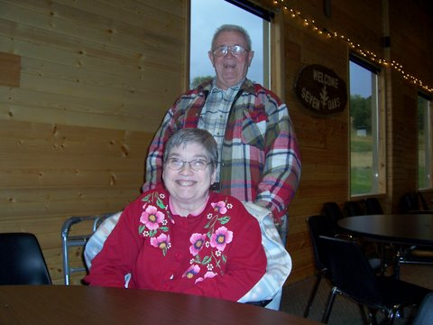
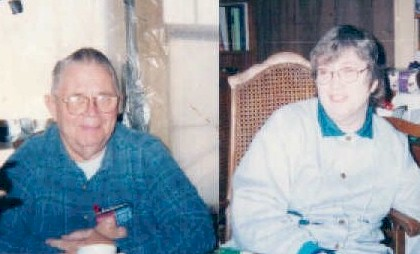
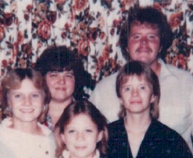
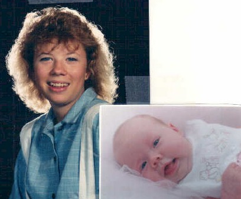

BHS 1967 Class Member
Kathleen (McClain) Moffit
 1967 |
 2007 - Kathy & Alvin at 40th Class Reunion |
|  2002 (Kathy Mcclain Moffet, Alvin, and kids) |
|
|  |
 Jacqui's daughter & Kathryn Rose (3.5 months) |